Capstone ◆ Mechanical design ◆ University of Toronto ◆ 2022
When the Formula racing team went electric, they kept the combustion car's drivetrain: one chain, one pair of sprockets, all the speed reduction in one step. That step sets a minimum distance between the motor and the differential, and that distance is wheelbase the car cannot afford in a tight corner. This is the 4:1 planetary gearbox designed to take the reduction off the chain — and a re-check of the report's own numbers, which holds up on the geometry and turns up two arithmetic slips in the vibration analysis.
The full-scale printed prototype turning under hand. The metal build did not happen — pandemic disruption and a 5,000 CAD bill of materials against a 1,000 CAD budget — so the design was proven on a printed assembly with every real machine element in it: bearings, seals, O-rings, fasteners and oil.
The project's justification is one sentence, repeated in the executive summary and the introduction: the chain-and-sprocket reduction "increases the wheelbase due to the minimum center to center distance required between the sprockets", and that hurts the car in tight corners. It is the reason the gearbox exists. It is also never turned into a number, anywhere in seventy-five pages.
It is a short calculation. A roller-chain sprocket's pitch diameter is set by the chain pitch and the tooth count:
and the chain's wrap on the smaller sprocket, for a centre distance C, is
Chain drives want at least 120° of wrap on the small sprocket — below that too few teeth carry the load and the chain starts to climb. With the 520 chain the team already runs (15.875 mm pitch) and an 18-tooth driver, that criterion gives:
So the gearbox buys 176 mm — a 65 % cut in how far apart the motor and differential have to sit. That is the project's whole case, and it is worth stating out loud: on a car whose wheelbase is around 1,550 mm, this is roughly 11 % of it, recovered from a component that fits behind the motor rather than beside it.
It also explains a choice that looks odd in the final specification. The gearbox misses its stated volume envelope — 224 mm across a 190.5 mm limit — while coming in under total volume, 6.4 litres against 10.1. A planetary is a disc, and the envelope was drawn for something long and thin. The design did not shrink to fit the box; it changed shape, and the shape is the point.
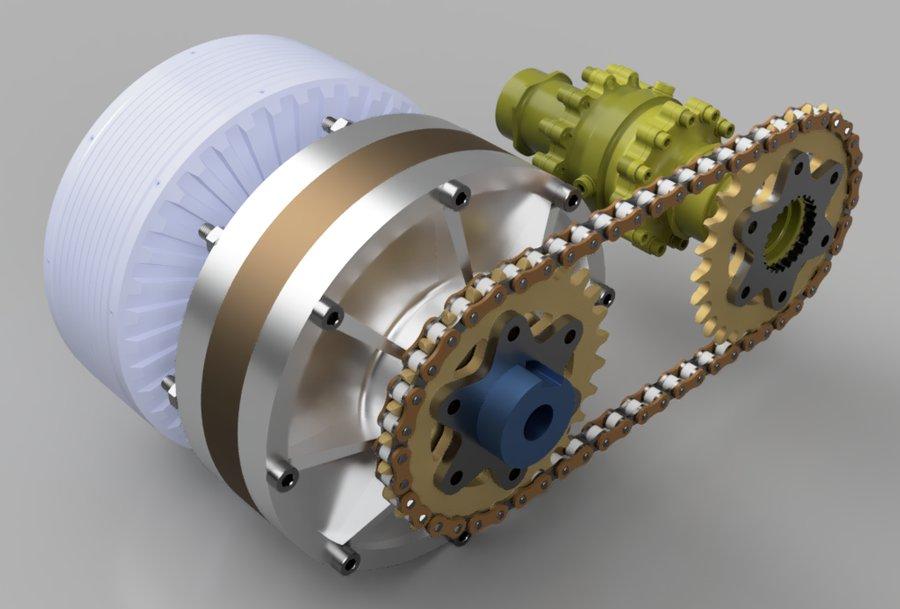
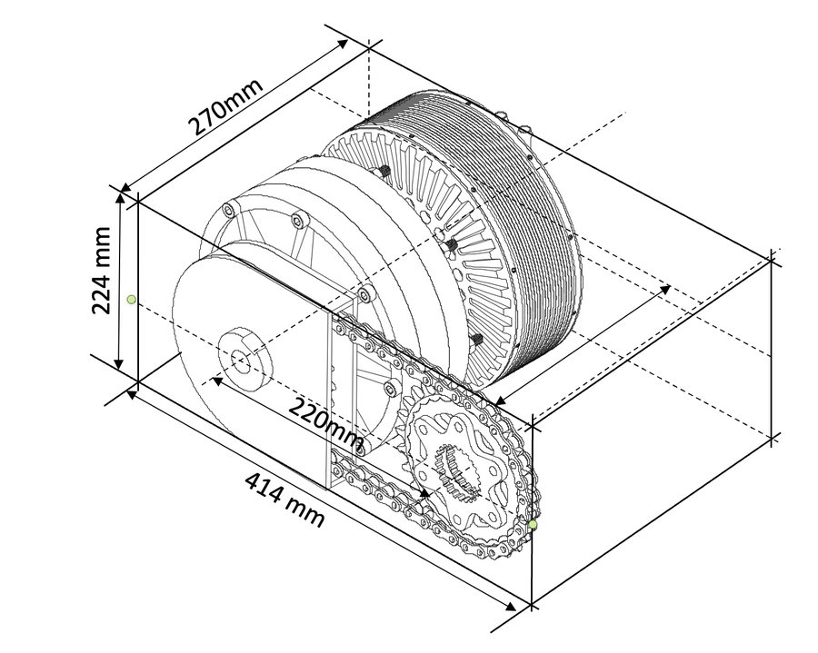
Sun in, ring held, carrier out — the configuration that gives the highest ratio of the four a planetary set can be wired for. Change the teeth and everything moves at once: the ring count is forced by the coaxial condition, the ratio follows, and so does the gear-mesh frequency that the vibration analysis turns on. The four presets are the report's own shortlist, and two of them cannot be built.
Yellow is the sun (input); the four grey wheels are the planets, carried around on the arms; the outer ring is held stationary and reacts the torque into the housing.
A planetary set has to satisfy three conditions before anything else about it matters. The report states the first and uses it:
which just says the planets have to reach from the sun to the ring. The other two are equally standard and do not appear:
The assembly condition is the interesting one. Planets can only be placed where a tooth of the sun and a tooth of the ring line up simultaneously; if n equally spaced positions are wanted, the tooth counts have to divide accordingly. Fail it and the set is still a valid gear train — but the planets have to be unequally spaced, which reintroduces exactly the rotating imbalance the last chapter of the report spends fourteen pages worrying about.
Applying it to the report's shortlist of four candidate tooth sets, with the four planets the design settled on:
| Ring | Sun | Planet | Ratio | Coaxial | Assembly ÷ 4 |
|---|---|---|---|---|---|
| 90 | 30 | 30 | 4.00 | ✓ | ✓ 120/4 = 30 |
| 100 | 30 | 35 | 4.33 | ✓ | ✗ 130/4 = 32.5 |
| 120 | 40 | 40 | 4.00 | ✓ | ✓ 160/4 = 40 |
| 120 | 30 | 45 | 5.00 | ✓ | ✗ 150/4 = 37.5 |
Half the shortlist is infeasible for four equally spaced planets. The design that shipped is one of the two that work, so nothing was built wrong — but it was chosen from a field of two, not four, and for a reason ("smaller footprint") that only distinguishes it from one real alternative.
And footprint alone does not point at 90/30/30. Searching every tooth combination between 13 and 60 teeth that satisfies all three conditions and lands in the client's 3–5 ratio window gives 712 valid sets; the smallest ring among them is 78 mm in pitch diameter against the chosen 180 mm. Those small sets are not free — few-tooth pinions carry less at the root and a 13-tooth 20° spur is right at the undercut limit — which is the honest answer, and a better one than footprint: the design is sized by tooth strength, and the footprint follows.
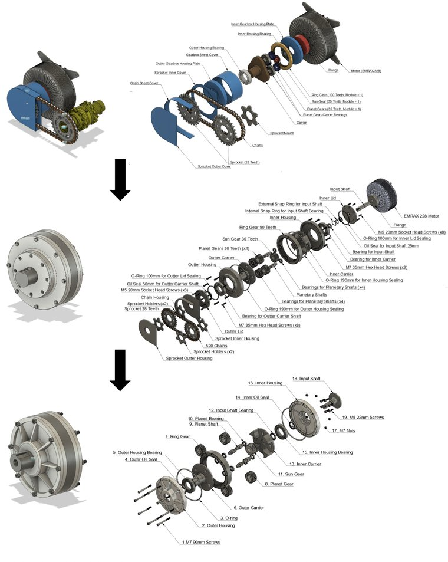
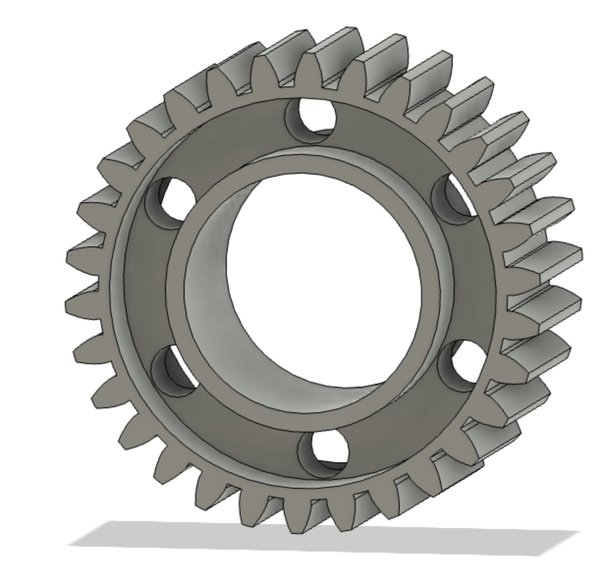
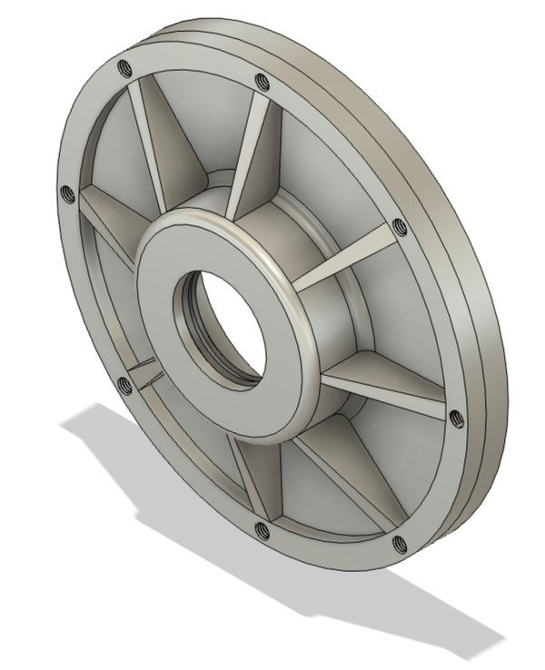
The report closes its longest analysis with a clean conclusion: "both the system natural frequency and the individual component frequency is not in the range of forced vibration frequencies." That conclusion rests on two numbers, and both of them are off — one by a factor of 2π, the other unexplained. Corrected, the design still probably works, but the margin is not the one the report reports.
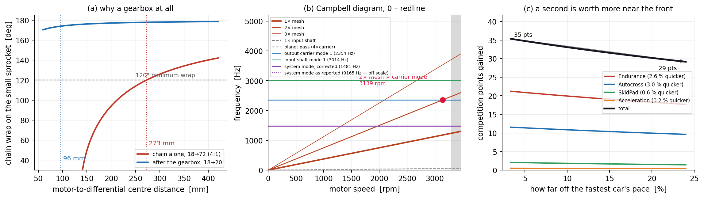
scripts/tools/fsae_gearbox.py.The report gives the mesh frequency as fmesh = finput × (input teeth ÷ output teeth) and reports 1,550 Hz at the motor's 3,300 rpm. That formula is for a fixed-axis pair, and even taken literally it gives 55 × 30/90 = 18.3 Hz — so the 1,550 does not come from it.
In a planetary set with the ring held, teeth engage at the rate the carrier sweeps them past:
and the sun-planet mesh agrees, zsun(fsun − fcarrier) = 30 × 41.25 = 1,237.5 Hz, as it must. The reported figure is 25 % high.
The lumped model is a mass on an axial spring: k = EA/L with the gearbox's 14.55 kg on a 1.26 × 10⁻⁴ m² contact of 0.02 m length in 4140 steel. With E = 190–210 GPa that gives k = 1.20–1.32 GN/m, not the 0.50 GN/m the text states — and then
The report's own 9,165.15 is exactly this quantity, and it is correct — in radians per second. Labelled as hertz it is 2π times too large, which is what puts the system mode comfortably above everything else and produces the clean conclusion.
Corrected, the picture is tighter than comfortable. The mesh frequency at redline is 1,238 Hz against a 1,481 Hz system mode — 84 % of it. The fundamental never quite crosses, so on the report's own terms the conclusion survives; but an 18 % separation is inside what rotating-machinery practice would want verified rather than assumed, it moves with every stiffness assumption in that paragraph — including the one that is misquoted — and, as the next finding shows, the fundamental is not the only thing exciting the structure.
Gear mesh is not a sinusoid — a tooth engaging is closer to an impulse train, so the excitation has energy at 2×, 3× and beyond the mesh frequency, falling off with order. The report compares the fundamental against the modal frequencies and stops.
Drawing the orders as lines against motor speed — a Campbell diagram, panel (b) — the fundamental does stay clear of everything. The harmonics do not. Against the corrected system mode and the lowest reported mode of each part, there are five crossings below the redline:
All five are inside the operating range, and 3,139 rpm is 95 % of redline — where an endurance run spends much of its time on the straights. The output carrier is also the one part the report separately identifies as carrying an unbalanced mass, from its keyway indent.
None of this says the gearbox fails. Higher harmonics carry much less energy, the FEA modes were computed with idealised constraints, and real damping is not in the model. It says the question is open where the report closes it, and that the dyno test the conclusion already recommends should be looking for these two speeds specifically.
The project is justified on competition points. The introduction says so directly — statics are 325 of 1,000 and the team does well at them; dynamics are 675 and the team wants more of them. The lap simulation then produces four numbers and stops at seconds:
| Event | 3.0 final drive | 4.0 | Quicker by |
|---|---|---|---|
| Acceleration | 5.56 s | 5.55 s | 0.18 % |
| Skidpad | 5.45 s | 5.42 s | 0.55 % |
| Autocross | 57.75 s | 56.00 s | 3.03 % |
| Endurance | 151 s | 147 s | 2.65 % |
Seconds are not the objective; points are, and the FSAE rulebook the report cites as its reference [1] gives the conversion exactly. Every dynamic event scores on a ratio to the fastest car in the field:
with Tmin the quickest time anyone set, Tmax a fixed multiple of it (150 % for acceleration, 125 % skidpad, 145 % autocross and endurance), and skidpad squaring both ratios. A is 95.5, 71.5, 118.5 and 250 respectively.
Because the formula depends only on ratios of times, the conversion needs no absolute lap count and no knowledge of the track — a percentage improvement is all it takes. The answer is 29 to 35 points of the 575 on offer in those four events, across the whole plausible range of where the car sits in the field.
For scale, that is roughly the gap between finishing tenth and finishing fifth at a typical competition, from one component. It is also, on its own terms, a good return on 5,000 CAD.
The score is linear in Tmax/Tyours, so the points gained per second scale as 1/Tyours2. The same 4-second endurance gain is worth 35 points to a car 3 % off the leader's pace and 29 points to one 24 % off — a fifth less, for identical hardware.
This runs against the intuition that an upgrade helps a slow car most, and it has a practical consequence for a student team: the drivetrain is worth building after the car is basically quick, not as a way of becoming quick. Below 45 % off the pace the endurance score collapses to its 25-point floor and the gearbox is worth nothing at all.
The endurance event carries this on its own — 19 of the ~31 points at a mid-field pace — because it has the largest point pool (275) and the second-largest time gain. Acceleration, despite being the event a torque increase sounds like it should win, contributes half a point: the run is traction-limited off the line, so a taller ratio changes almost nothing.
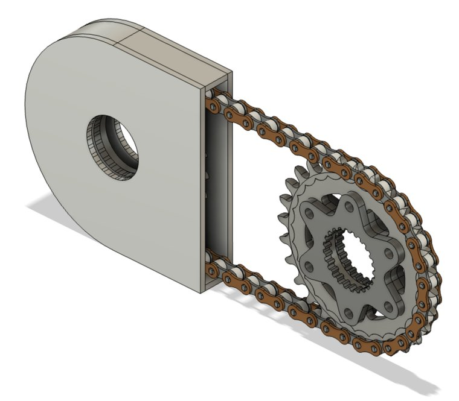
| Objective | Target | Achieved |
|---|---|---|
| Mass | ≤ 20 kg | 15.4 kg |
| Gear ratio | 3 – 5 | 4.0 (plus a tunable chain) |
| Assembly time | ≤ 2 h | 1 h |
| Service life | ≥ 350 h | 1,000 h |
| Safety factor | 1.2 | 2.5 root, 1.4 flank |
| Efficiency | ≥ 90 % | 91 % (estimated, not measured) |
| Volume envelope | 127 × 190.5 × 419 mm | 126.6 × 224 × 224 mm — over on one axis, 37 % under on volume |
| Operating temperature | −29 to 57 °C | −23 to 40 °C — narrower than required |
| Cost | ≤ 1,000 CAD | 5,000 CAD |
Six of nine met, one changed shape rather than shrinking, and two missed — the temperature range by a little and the budget by 5×. The cost overrun is the one that decided the outcome: it is why the metal gearbox was never cut.
The plan was a machined gearbox on the 2023 car, bench-tested against the motor on a dyno. What happened instead was a full-scale printed assembly containing every real machine element — the selected bearings, the oil seals, the O-rings, the critical fasteners, and oil.
It is a better fallback than it sounds, because most of what was uncertain is geometric. The prototype confirmed the ratio directly, by counting output rotation against one input turn. It confirmed the assembly sequence and the tolerance stack-up, and timed the assembly at an hour. It confirmed the seals held oil — with one honest exception, a slight trickle at the bottom on standing, which the report attributes to the O-ring groove design. And it showed the difference lubrication makes to breakaway torque, by hand, which is not a measurement but is the right instinct.
What a printed prototype cannot answer is everything this page has been about: the efficiency is still an estimate, the 1,602 W cooling load is still a calculation, and the two resonance crossings above are still on paper. The report's own closing recommendation is dyno testing, and that remains exactly right — with, now, two specific speeds to watch.
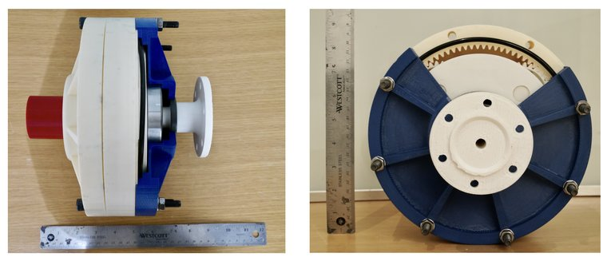
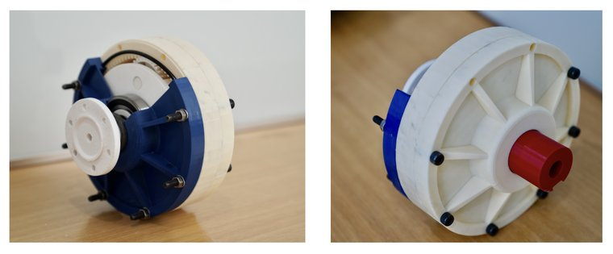
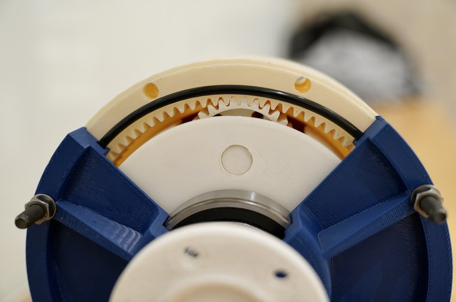
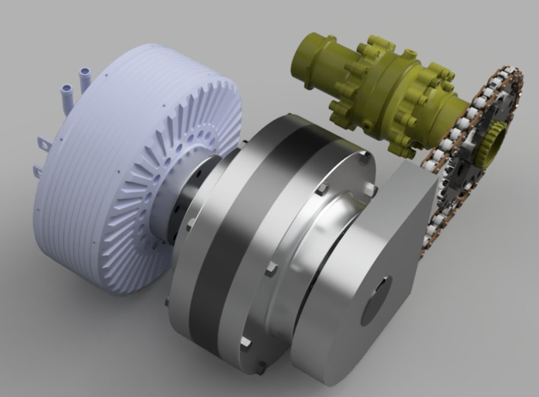
MIE Capstone, University of Toronto, 2022 — FSAE 1: Electric Motor Gearbox Design, for the University of Toronto Formula Racing Team. Qilong (Jerry) Cheng, Tejvir Binepal, Rupin Kothari and Syed Nahyan Ahmed, supervised by Prof. Tony Sinclair. The gearbox design, the KISSsoft and ANSYS analyses, the OptimumLap study and the printed prototype are the team's capstone work.
The chain-wrap calculation, the feasibility sweep over tooth counts, the Campbell diagram, the points conversion and the browser gear set on this page were written afterwards, from the report's stated quantities and the FSAE 2021 rulebook it cites. They are a re-check of the design specification, not part of the original submission, and where they disagree with it the disagreement is stated above rather than quietly corrected.